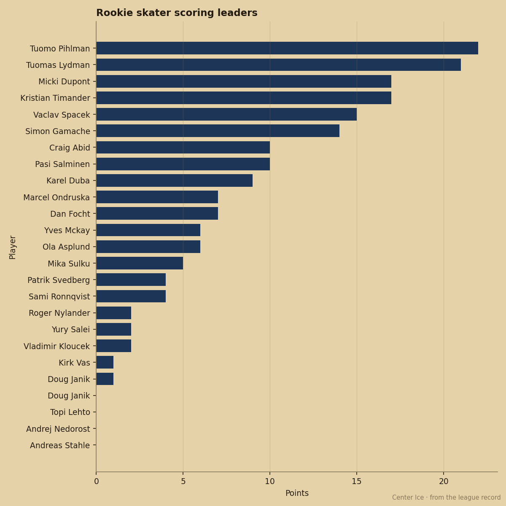

The 9th Pick Leads the Calder With a 56 Potential and the 10th Pick Is Right Behind Him
The two top rookie scorers from the 2004 class carry the lowest potential grades in the first round
 Pete LarocqueScouting editor · The Prospect File
Pete LarocqueScouting editor · The Prospect FileTuomo Pihlman78 leads all rookies with 22 points in 43 games for  Minnesota Wild. He was the 9th pick last June. Tuomas Lydman77 has 21 in 46 for
Minnesota Wild. He was the 9th pick last June. Tuomas Lydman77 has 21 in 46 for  Mighty Ducks of Anaheim from the 10th slot. They own the top two spots in the Calder race, and the Book grades both of them as finished products.
Mighty Ducks of Anaheim from the 10th slot. They own the top two spots in the Calder race, and the Book grades both of them as finished products.
The Bureau has Pihlman at 71 overall with a 56 potential. Lydman sits at 70 with a 52. Those potential figures read below their current overall grades, which means the Book expects development to stop.
The first three picks trail them. Vaclav Spacek81 went first overall and carries 15 points in 30 games at 11.6 minutes a night for  Toronto Maple Leafs. His potential reads 91 against a 73 overall. The gap goes the other direction: the Bureau expects him to grow.
Toronto Maple Leafs. His potential reads 91 against a 73 overall. The gap goes the other direction: the Bureau expects him to grow.
Kristian Timander74, the 2nd pick, has 17 points in 27 games for  New York Islanders. His potential is 66, below his 70 overall. The 3rd pick Karel Duba75 has 9 points in 27 games for
New York Islanders. His potential is 66, below his 70 overall. The 3rd pick Karel Duba75 has 9 points in 27 games for  Los Angeles Kings and a 51 potential, the lowest in the first round.
Los Angeles Kings and a 51 potential, the lowest in the first round.
The men producing right now carry low potential grades. The men with high potential grades are still finding minutes.

The 92 That Scores 5 Points in 38 Games
Mika Sulku70 carries the highest potential in the 2004 first round at 92. He has 5 points in 38 games for  Calgary Flames on 7.5 minutes a night. Pihlman, whose potential the Book puts at 56, has more than four times his production.
Calgary Flames on 7.5 minutes a night. Pihlman, whose potential the Book puts at 56, has more than four times his production.
The potential number measures the likelihood of future development. A 92 means the Bureau thinks Sulku will likely reach a high level. It does not say when. Pihlman's 56 means the Bureau thinks he will not grow. He is scoring 22 points right now because he is already the player he will always be.
A GM choosing between a player with 22 points and a 56 potential, versus a player with 5 points and a 92 potential, is choosing between two different bets. One is a known quantity who plays today. The other is a projection.
Where the Race Stands
Pihlman is 20 years old. He has played 43 of Minnesota Wild's 52 games and carries a 0 on the Development Index, meaning he is performing exactly at his base grade. No heater, no cold streak.
Lydman has played 46 games for Mighty Ducks of Anaheim, a team sitting 21-15-10 and 64 points in the Pacific Division. He logs 19.2 minutes a night, the most of any 2004 first-rounder. His 70 overall is his base with a 0 on the Index.
The next man up among 2004 first-rounders is Timander at 17 points, then Spacek at 15. After that the numbers drop fast: Pasi Salminen73 at 10, Craig Abid70 at 10 from the 28th slot, Duba at 9. Neither Spacek nor Duba is in the Calder conversation at their current pace.
Among the 2004 first rounders specifically, nobody outside Pihlman and Lydman has matched their point totals or their game counts. The rest of the class sits below 18 points with fewer than 30 games played.
Last year's Calder went to Eric Meloche78 of  Pittsburgh Penguins. This year's field is deeper and the top numbers are lower. Pihlman's 22 leads, and the Book has him at 56 potential as of February.
Pittsburgh Penguins. This year's field is deeper and the top numbers are lower. Pihlman's 22 leads, and the Book has him at 56 potential as of February.